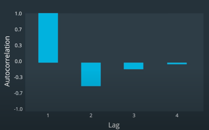

Time Series Modeling
Table of Contents
1 Overview
- Auto-regression
- Moving Averages
- Auto-regressive Moving Averages
- Auto-regressive Integrated Moving Averages
- Machine Learning Methods
- Kalman Filter
- Particle Filters
- Recurrent Neural Networks
2 Autoregressive(AR) Model
AR model tries to fit a line that is a liner combination of previous values. \[y_t = \alpha + B_{1}y_{t-1} + B_{2}y_{t-2} + ... + \epsilon_t\]
- \(\alpha\): intercept
- \(B_i\): coefficients
- \(\epsilon_t\): Error(noise), represents movements that cannot be predicted using the previous values.
- Lag: the number of past values used in the model. e.g. AR Lag 2 model
- Describe an AR model as \(AR(p)\), where p stands for the lag.
- Check the adjusted R-squared(Adj \(R^2\)) and adjust the lag.
- Vector Autoregressive Model: similar with Multivariate Multiple Regression

3 Moving Average(MA) Model
\[y_t=\mu+\epsilon_t+\theta_1\epsilon_{t-1}+\theta_2\epsilon_{t-2}+...\theta_q\epsilon_{t-q}\]
- \(MA(q)\), where q stands for the lag.
- To decide the best value for q, draw a autocorrelation plot.
4 Autocorrelation
Autocorrelation is a measure of how much the current value moves in relation to one of its previous values. 
# Autocorrelation Plots from statsmodels.graphics.tsaplots import plot_acf _ = plot_acf(lret, lags=10, title='log return autocorrelation') from statsmodels.graphics.tsaplots import plot_pacf _ = plot_pacf(lret, lags=10, title='log return Partial Autocorrelation')
Partial autocorrelation is different from autocorrelation in that it shows the influence of each period
that is not attributed to the other periods leading up to the current period. In other words, the two-day
lag had a fairly strong correlation with the current value because it had a strong correlation with the
one-day lag. However, the two-day lag's partial correlation with the current period that isn't attributable
to the one-day lag is relatively small.*Ljung-Box Test* helps us check whether the lag we chose gives autocorrelations that are significantly different from zero.
- \(H_0\): the previous lags as a whole are not correlated with the current period.
- \(pvalue\le 0.05\): the past lags have some correlation with the current period.
from statsmodels.stats.diagnostic import acorr_ljungbox lb_test_stat, lb_p_value = acorr_ljungbox(lret, lags=20)
5 Correlation \(\ne\) Regression
- Correlation
- measures the pairwise relationship between exactly two periods at a time. (ranges -1 to 1)
- Multiple Regression
- measures how a set of independent variables collectively influence the value of the dependent variable.
6 ARMA (Autoregressive Moving Average)
\[ARMA(p, q): y~AR(p)+MA(q)\]
- p is the lag for autoregression
- q is the lag for moving average
- ARIMA (Autoregressive Integrated Moving Average): A variation of the ARMA which is used in Pair Trading
import numpy as np import pandas as pd from statsmodels.tsa.arima_process import ArmaProcess # Simulate return series with autoregressive properties np.random.seed(200) ar_params = np.array([1, -0.5]) # autoregression params ma_params = np.array([1, -0.3]) # moving average params ret = ArmaProcess(ar_params, ma_params).generate_sample(nsample=5*252) ret = pd.Series(ret) drift = 100 price = pd.Series(np.cumsum(ret)) + drift from statsmodels.tsa.arima_model import ARMA lret = np.log(price) - np.log(price.shift(1)) # Use autocorrelation plot to choose which lag to use from statsmodels.graphics.tsaplots import plot_acf _ = plot_acf(lret, lags=10, title='log return autocorrelation') # check the lag using Ljung-Box Test from statsmodels.stats.diagnostic import acorr_ljungbox lb_test_stat, lb_p_value = acorr_ljungbox(lret, lags=20) # Fit an ARMA model from statsmodels.tsa.arima_model import ARMA AR_lag_p = 1 MA_lag_q = 1 arma_model = ARMA(lret.values, order=(AR_lag_p, MA_lag_q)) arma_result = arma_model.fit() arma_pred = pd.Series(arma_result.fittedvalues) # Fit an ARIMA model from statsmodels.tsa.arima_model import ARIMA AR_lag_p = 1 MA_lag_q = 1 order_of_integration_d = 1 order = (AR_lag_p, order_of_integration_d, MA_lag_q) arima_model = ARIMA(lret.values, order=order) arima_result = arima_model.fit() fittedvalues = arima_result.fittedvalues arima_pred = pd.Series(arima_result.fittedvalues)
7 Test for Time Series Stationary
- Augmented Dickey Fuller Test

- When the time difference pass the test, then we can say it is stationary and integrated of order zero. It can be modeled with ARMA